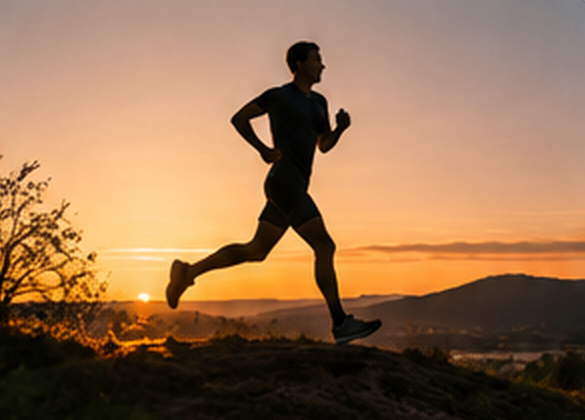
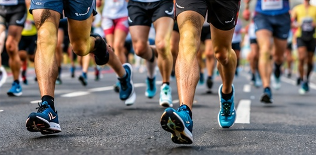
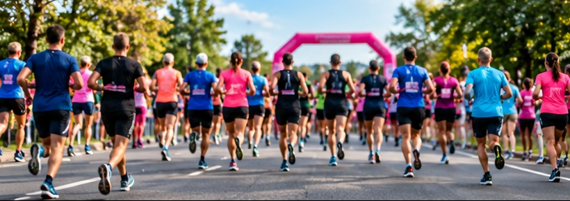
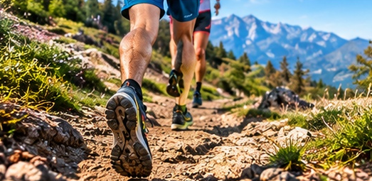

Ayant pratiqué la musculation au poids de corps (pompes, tractions, dips, squat) depuis plus de 12 ans et après un arrêt du sport de quelques années, je me suis trouvé une nouvelle passion pour la course à pied que j'ai commencé le 26/02/2026. Au fil du temps c'est devenue une véritable passion.
Désirant perdre un peu de poids au départ et étant parti de 100 kg (après avoir pris un peu de poids suite à la formation la toile, les chefs étant très généreux sur les quantités 😅), je suis actuellement à 85 kg.
100 kg → 85 kg
test
26/02/2026
Début de mon running

Une passion qui grandit
Étant fervu de vitesse, je cherche à améliorer mes chronos (mes distances fétiches sont 5 km et 10 km), mais je me pencherai peut être sur les semi-marathons et marathons d'ici quelques mois.
Mon but étant aussi d'améliorer ma VO2max, car une meilleure VO2max = une meilleure espérance de vie.
LA VO2 MAX KESAKO? Clique ici pour savoir ce que c'est
Mon programme
Un entraînement varié et efficace :
✔Séances en côtes
✔Séances fartlek
✔8 x 400 m
✓5 x 1000 m
✔6 x 600 m
✔4 x 4 norvégien
✔ Séances d'endurance fondamentale (courses au ralenti )
+5 points de VO2max en 2 mois ! Ma VO2 max est déjà passé de 48 à 53 en 2 mois grâce à ces séancee !
Un véritable bien-être après chaque séance.
Mes 3 premières courses

Tout thiers Court 2026
Mon premier défi
Un parcours plutôt roulant, pas de montre, pas de paires de basket dernier cri mais déjà un chrono honorable. J'avais encore un poids trop lourd (95 kg et je le sentais).

Corrida Appelouse 2026
Déjà plus léger!
Avec 93 kg, je me sens déjà plus léger, même si je reste encore un peu trop lourd. Consulter les résultats Chrono et classement à compléter.

La Vertai'Rose
Mon premier trail!
Un trail avec 150 m de dénivelé, une nouvelle découverte pour moi. Et une belle surprise à l'arrivée: 4o homme sur 68, et 1or de ma catégorie Senior! Consulter les résultats
Un podium... en chocolat!
Le 20/06/2026, je termine 4e homme sur 68 et 1er de ma catégorie Sénior. Une belle médaille en chocolat, et surtout une grande fierté d'avoir couru pour une bonne cause: Octobre Rose (soutien aux femmes).
Un petit conseil... à ne pas suivre !
Et pour couronner le tout, j'avais acheté mes chaussures de trail le jour J.
Une erreur à ne pas refaire !